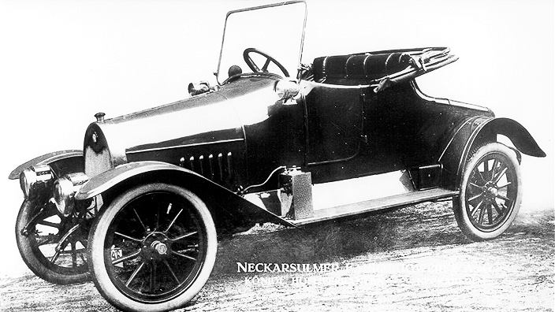

Historia
 August Horch (1868-1951), uno de los pioneros de la industria automovilística alemana, fundó en Colonia (Alemania), la empresa de autos Horch en 1899, cuyo primer automóvil comenzó a circular por vías públicas en 1901.
Después de algunas dificultades financieras y desavenencias internas, decidió abandonar la compañía para crear una nueva fábrica de automóviles. Así nació la «August Horch & Cie. Motorwagenwerke AG»
en Zwickau, el 16 de julio de 1909. Como Horch perdió la disputa legal por el nombre de la compañía,
que ya estaba registrado anteriormente, no pudo volver a utilizar su apellido y escogió el nombre «Audi»,
la traducción al latín del vocablo alemán «horch», que en español significa «oye» o «escucha».
Por ello, meses después de su fundación cambió el nombre de la compañía a «Audi Automobilwerke».